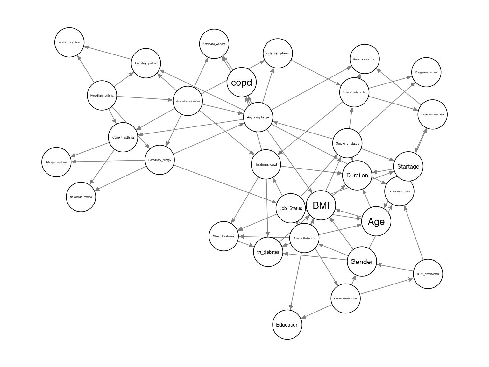
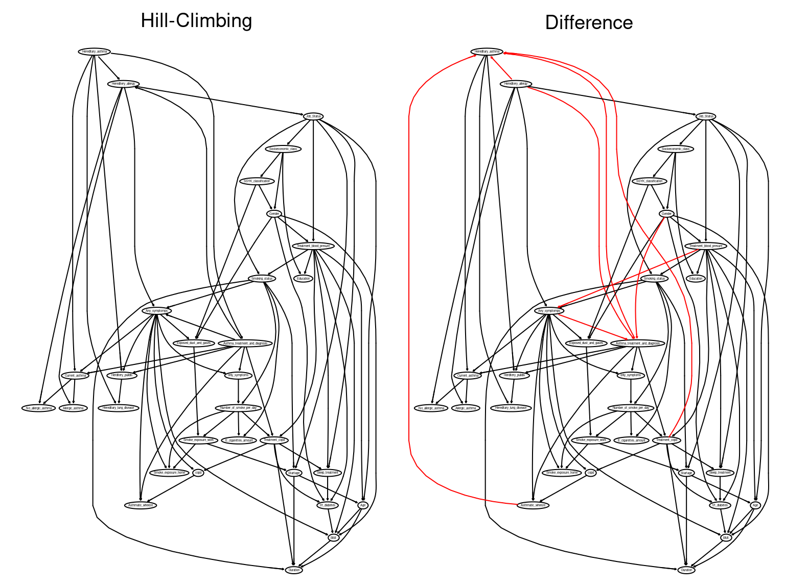
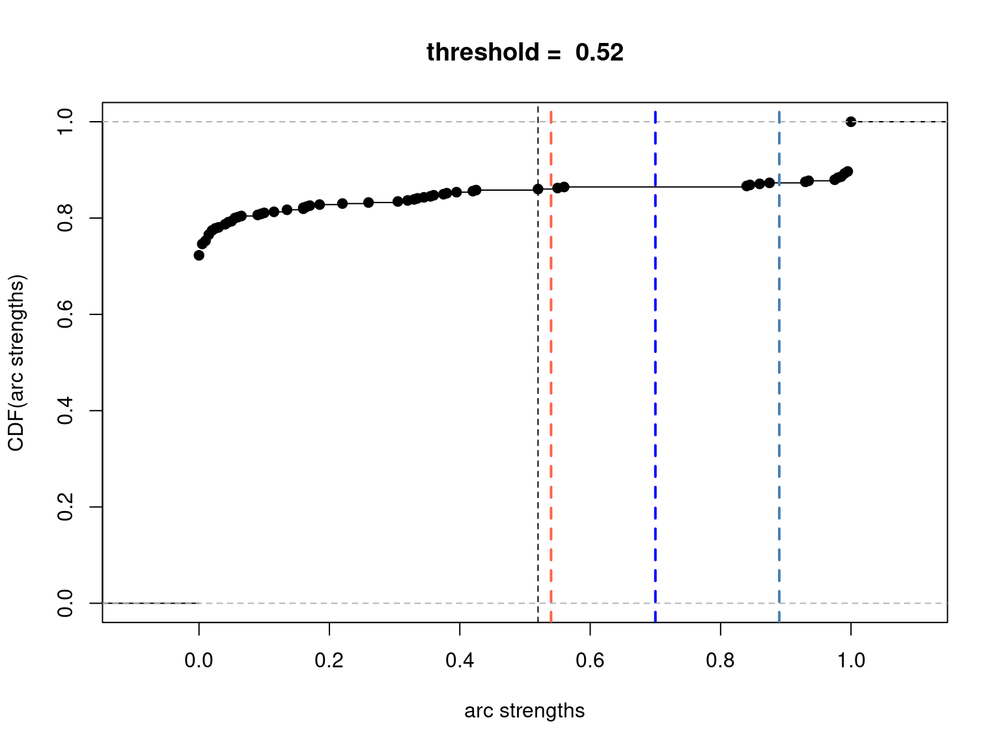
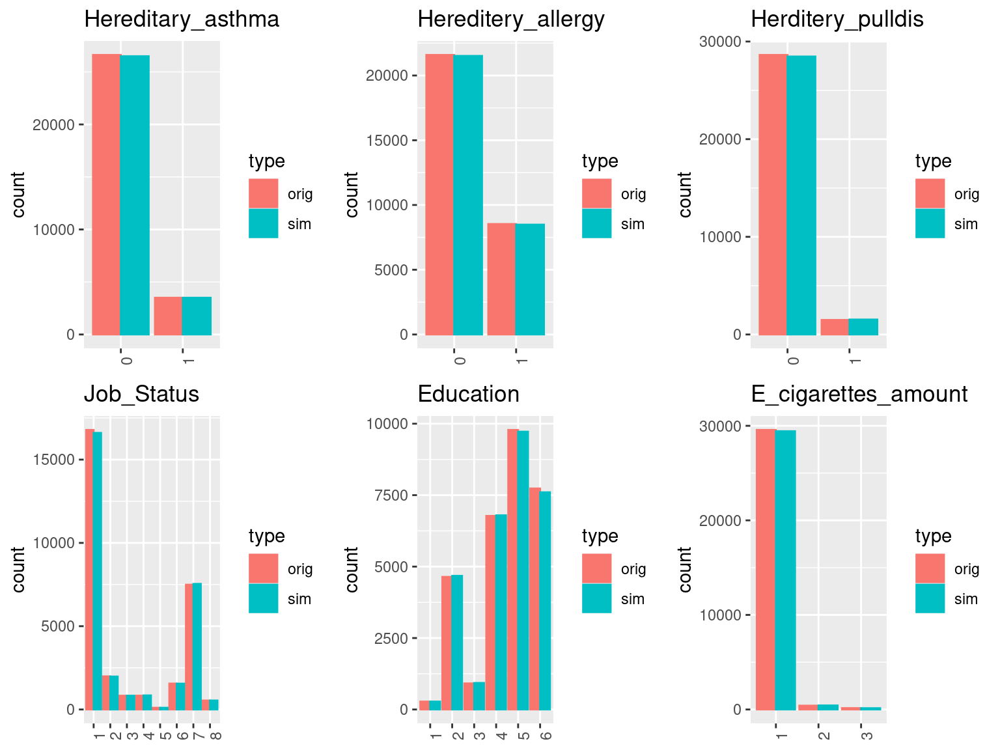
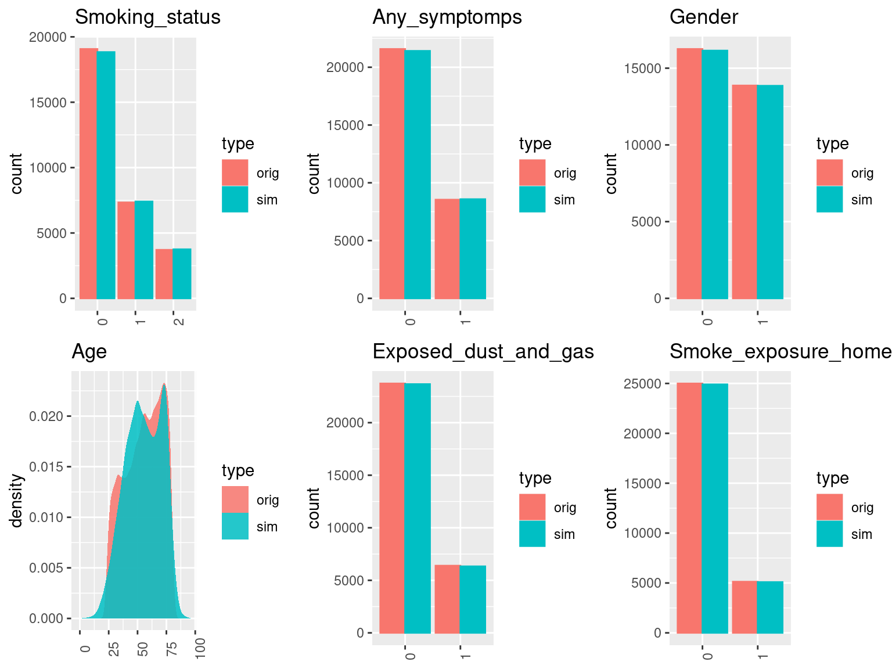
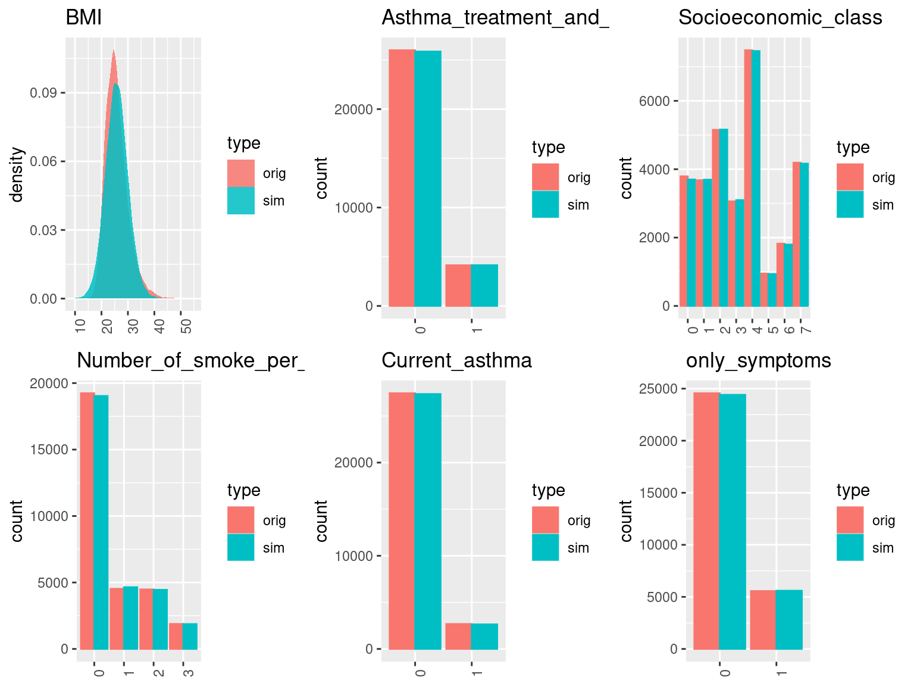
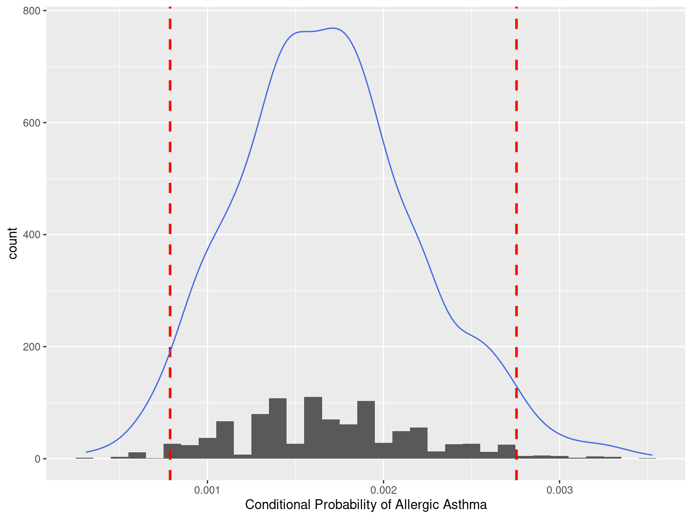
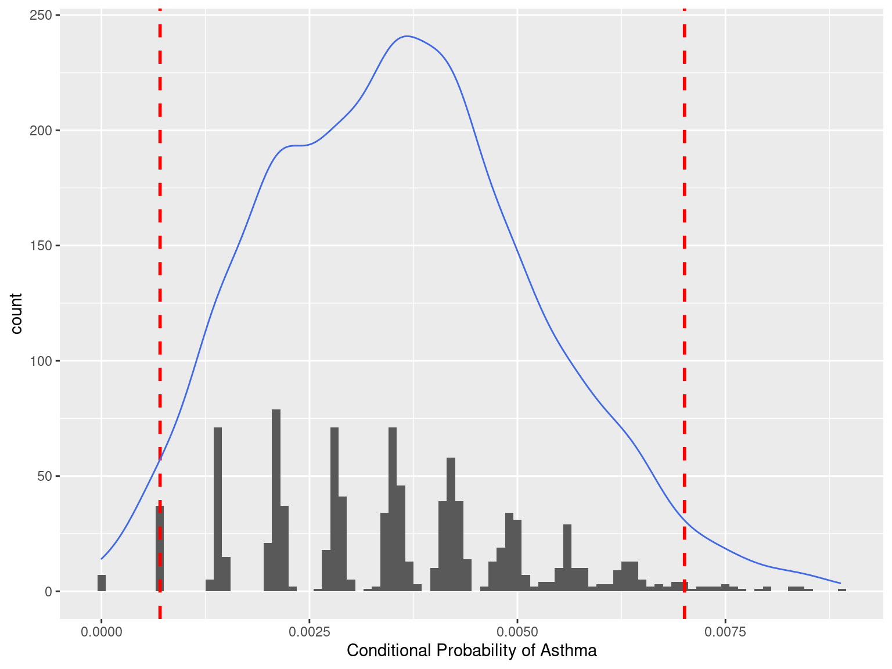
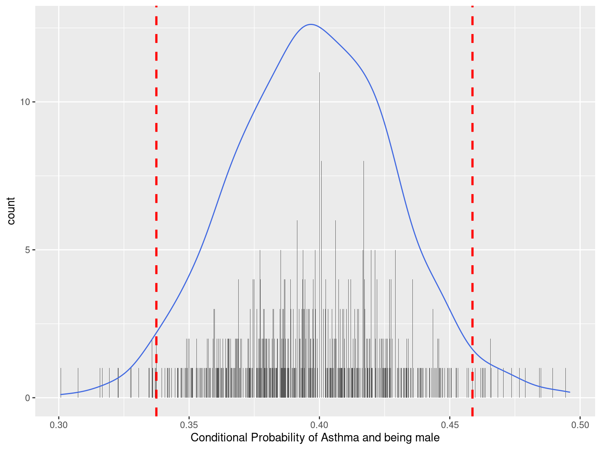

Bayesian Network for interaction between smoking social class and risk of asthma. 

Rani Basna
Krefting Research Center, University of Gothenburg.
Krefting Research Center, University of Gothenburg.
24/03/2021
Introduction to Bayesian Network

Correlation and Dependence
Two random quantities can be uncorrelated but still be dependent but if they are independent they are necessarily uncorrelated.
Set of correlated random variables is a subset of set of dependent random variables.

Intorduction to Bayesian Network

Intorduction to Bayesian Network
- A BNs is a directed acyclic graph in which each edge corresponds to a conditional dependency, and each node corresponds to a unique random variable.
- If an edge exists in the graph connecting random variables A and B, it means that P(B|A) is a factor in the joint probability distribution, so we must know P(B|A) for all values of B and A in order to conduct inference.
Reasons to use Bayesian Networks
Encode the association between all variables (interactive view).
Encode the association as Conditional Independence structure of variables.
Generative as opposed to regression as discriminative.
Casual effect, intervention, Counterfactual and what-if scenario.
Expert system, Hybrid learning, or learn completly from data.
BN can be extended into decision models by incorporating decision and utility nodes to automate decisions.
Multiple outcomes and exposures in one BN model.
Avoiding the collider bias (feature selection.).
probability distribution with inference.
Steps of Building a Bayesian Network Analysis
- Learning the Network structure:
- Data_driven approach (Score-based approach, Constraint based approach)
- Expert knowledge approach
- Hybrid approach (using white and blacklist as constraint)
- Learning the parameter
- Maximum likelihood estimation
- Bayesian Estimation
- Approximate Inference
Example of Socioeconomic Airway data
Learning the Network Structure
Data Preprocessing
- Missing value imputation
- Variable transformation
Structure learned from data (Hill-Climbing)

chalenges
Overfitting, Bayesian information Criteria
Stability
we can improve the quality of the structure learned from the data by averaging multiple DAGs
One possible approach to that end is to apply bootstrap resampling.
Comparing tow different structure learning

Bootstap resampling
- Repeat many times
- sample a new data set from the original data using either parametric or nonparametric bootstrap;
- learn the structure of the graphical model for each sample data.
- Estimate the probability that each possible edge is present in the true network structure.
- This result in arc strength and arc direction.
- Arcs are considered significant if they appear in at least 85% of the networks, and in the direction that appears most frequently.
Averaging

Cumulative Distribution of the arcs strength

Learning the parameters and Validations
Cross-validation
##
## k-fold cross-validation for Bayesian networks
##
## target network structure:
## [sei_class][jabstatus|sei_class][syk_class|sei_class]
## [gender|sei_class:syk_class][trt_bp|jabstatus][duration|jabstatus]
## [edu_credits|trt_bp:sei_class][smoking_status|duration][age|jabstatus:trt_bp]
## [trt_sleep|jabstatus:gender:trt_bp][s_amount|duration]
## [e_amount|smoking_status][trt_copd|trt_bp:trt_sleep:duration]
## [startage|smoking_status][hereditery_asthma|trt_copd]
## [trt_diabetes|gender:trt_bp:trt_copd:trt_sleep]
## [asthma_tm|hereditery_asthma:trt_copd]
## [hereditery_allergy|hereditery_asthma:asthma_tm]
## [any_smp|hereditery_allergy:smoking_status:trt_copd:asthma_tm]
## [herditery_pulldis|hereditery_asthma:any_smp:asthma_tm]
## [DGF_work|any_smp:gender:syk_class]
## [BMI|any_smp:gender:age:trt_bp:trt_diabetes]
## [c_asthma|hereditery_asthma:any_smp:asthma_tm]
## [only_symptoms|any_smp:asthma_tm][copd|any_smp:trt_copd]
## [w_asthma|any_smp:asthma_tm][smoke_expwork|DGF_work:s_amount]
## [her_dis|hereditery_asthma:herditery_pulldis]
## [noalle_asthma|hereditery_allergy:c_asthma]
## [alle_asthma|hereditery_allergy:c_asthma]
## [smoke_exphome|any_smp:smoke_expwork:s_amount]
## number of folds: 10
## loss function:
## Classification Error (Posterior, cond. Gauss.)
## training node: c_asthma
## number of runs: 5
## average loss over the runs: 0.001960492
## standard deviation of the loss: 2.410982e-07Checking generated data
Original vs Simulated 1

Original vs Simulated 2

Original vs Simulated 3

Inference
Sampling the Condtional Probability Allergic Asthma
- P[alergic asthma|NonSmoker, age ∈ [44, 63], No treatment diabete, No dust and Gas Exposure, No Hereditary lung disease]
- We will sample the conditional probability 1000 times
Ploting the results

Sampling the Condtional Probability Asthma
- P[Asthma|NonSmoker, age ∈ [44, 63], No treatment diabete, No dust and Gas Exposure, No Hereditary lung disease, 2 years high school]
- We will sample the conditional probability 1000 times
Ploting the result

Sampling the Condtional Probability Asthma and gender
- P[ Asthma and being Male|Smoker, age ∈ [44, 63], No treatment diabete, No dust and Gas Exposure, No Hereditary lung disease, 2 years high school]
- Again, we will sample the conditional probability 1000 times
Plotting the resuts
